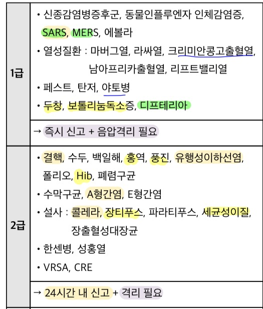

<html><head><meta charset="utf-8"><meta name="viewport" content="width=595, maximum-scale=4.0"><title>18. 발열_4조.docx</title><style type="text/css">body
{
font-size:12;
}
div
{
margin-top: 0;
margin-bottom: 0;
}
 p
{
margin-top: 0;
margin-bottom: 0;
line-height: 120%
}
 span
{
line-height: 120%
}
table
{
border-collapse: collapse;
border-color: black;
font-size:12;
}
td
{
word-wrap:break-word
}
</style><style id="cpx-ql-fit">html{background:#fff}body{margin:0!important;overflow-x:auto;transform-origin:0 0}.cpx-ql-fit-note{display:none}</style><script id="cpx-ql-fit-script">(()=>{function fit(){const meta=document.querySelector('meta[name="viewport"]')?.content||'';const m=meta.match(/width\s*=\s*(\d+)/i);const base=m?Number(m[1]):Math.max(900,document.body?.scrollWidth||1224);const scale=Math.min(1,Math.max(.42,(window.innerWidth-8)/base));if(document.body){document.body.style.zoom=String(scale);document.body.classList.add('cpx-ql-fitted')}}if(document.readyState==='loading')document.addEventListener('DOMContentLoaded',fit,{once:true});else fit();window.addEventListener('resize',fit,{passive:true})})();</script></head><style type="text/css">
.s0.s0.s0 {margin-left: 0; margin-top: 0;}
.s1.s1.s1 {overflow:hidden; position:relative; word-wrap:break-word; width: 523; padding-left: 36; padding-right: 36; min-height: 844; padding-top: 36; padding-bottom: 36;}
</style><body class="s0"><div class="s1"><style type="text/css">
.s2.s2.s2 {font-weight:bold; font-size:15;}
.s3.s3.s3 {font-weight:bold; margin-bottom:0; text-align:left; margin-left:0; font-size:15; line-height:1.380000; margin-right:0; text-indent:0; margin-top:0;}
</style><p class="s3"><span class="s2">18. 발열</span></p><style type="text/css">
.s4.s4.s4 {font-family:"Noto Sans Symbols"; min-width:-18;}
.s5.s5.s5 {font-weight:bold; font-family:"Malgun Gothic"; color:#000000; font-size:10; background-color:#ffffff;}
.s6.s6.s6 {text-align:left; text-indent:-18; font-weight:bold; margin-top:0; font-size:10; font-family:"Malgun Gothic"; color:#000000; margin-bottom:0; line-height:1.380000; margin-left:18; background-color:#ffffff; border-bottom-style:none;border-top-color:#000000;border-left-color:#000000;border-bottom-color:#000000;border-right-color:#000000; margin-right:0;}
</style><div class="s6"><span class="s4">● </span><span class="s5">개요</span></div><style type="text/css">
.s7.s7.s7 {font-size:10;}
.s8.s8.s8 {margin-bottom:0; text-align:left; margin-left:0; font-size:10; line-height:1.200000; margin-right:0; text-indent:0; margin-top:0;}
</style><p class="s8"><span class="s7">- D: 열나는 주기 및 기간에 대해 병력청취 </span><span class="s7"><br></span><span class="s7"> &nbsp;-> C: 열 잘 쟀는지 확인, 어떤식으로 쟀는지 등 </span><span class="s7"><br></span><span class="s7"> &nbsp;-> A: 탈수인지 체크 하고 계통 싹 돌리기 </span><span class="s7"><br></span><span class="s7"> &nbsp;-> F: 장소(여행), 접촉(사람,동물,성관계), 음식 물어보기 </span><span class="s7"><br></span><span class="s7"> &nbsp;-> 과거력에서 면역저하 될만한, 또는 감염될만한 history 확인</span></p><p class="s8"><span class="s7">- 감별진단에 모르겠으면 혈관염 끼워넣어도 될 듯</span></p><p class="s8"><span class="s7">- 응급 상황 교육 2가지를 기억하자 (탈수, 중증감염)</span><span class="s7"><br></span></p><style type="text/css">
.s9.s9.s9 {text-align:left; text-indent:-18; font-weight:normal; margin-top:0; font-size:10; font-family:"Malgun Gothic"; color:#ee0000; margin-bottom:0; line-height:1.380000; margin-left:18; background-color:#ffffff; border-bottom-style:none;border-top-color:#000000;border-left-color:#000000;border-bottom-color:#000000;border-right-color:#000000; margin-right:0;}
</style><div class="s9"><span class="s4">● </span><span class="s5">평가 목표 </span></div><style type="text/css">
.s10.s10.s10 {padding-left:5px; padding-right:5px; border-style:solid;border-width:thin;border-color:black; background-color:#f2f2f2;}
.s11.s11.s11 {font-weight:bold; font-size:9;}
.s12.s12.s12 {margin-bottom:0; text-align:left; margin-left:0; font-size:9; line-height:1.200000; margin-right:0; text-indent:0; margin-top:0;}
.s13.s13.s13 {padding-left:5px; padding-right:5px; height:2px; border-style:solid;border-width:thin;border-color:black; background-color:#f2f2f2; vertical-align:middle;}
.s14.s14.s14 {font-size:9;}
.s15.s15.s15 {padding-left:5px; padding-right:5px; height:2px; border-style:solid;border-width:thin;border-color:black;}
.s16.s16.s16 {padding-left:5px; padding-right:5px; height:5px; border-top-style:solid;border-left-style:solid;border-right-style:solid;border-top-width:thin;border-left-width:thin;border-right-width:thin;border-color:black; background-color:#f2f2f2; vertical-align:middle;}
.s17.s17.s17 {padding-left:5px; padding-right:5px; height:5px; border-style:solid;border-width:thin;border-color:black;}
.s18.s18.s18 {margin-bottom:0; text-align:left; margin-left:0; font-size:9; line-height:1.380000; margin-right:0; text-indent:0; margin-top:0;}
.s19.s19.s19 {padding-left:5px; padding-right:5px; height:16px; border-style:solid;border-width:thin;border-color:black; background-color:#f2f2f2; vertical-align:middle;}
.s20.s20.s20 {margin-bottom:0; text-align:center; margin-left:0; font-size:9; line-height:1.200000; margin-right:0; text-indent:0; margin-top:0;}
.s21.s21.s21 {font-weight:bold; margin-bottom:0; text-align:center; margin-left:0; font-size:9; line-height:1.200000; margin-right:0; text-indent:0; margin-top:0;}
.s22.s22.s22 {padding-left:5px; padding-right:5px; height:16px; border-style:solid;border-width:thin;border-color:black;}
.s23.s23.s23 {text-decoration:line-through; margin-bottom:0; text-align:left; margin-left:0; font-size:9; line-height:1.200000; margin-right:0; text-indent:0; margin-top:0;}
.s24.s24.s24 {text-decoration:line-through; margin-bottom:0; text-align:left; margin-left:0; font-size:9; line-height:1.380000; margin-right:0; text-indent:0; margin-top:0;}
.s25.s25.s25 {font-weight:bold; margin-bottom:0; text-align:left; margin-left:0; font-size:9; line-height:1.200000; margin-right:0; text-indent:0; margin-top:0;}
.s26.s26.s26 {font-family:"Noto Sans Symbols"; min-width:-22;}
.s27.s27.s27 {margin-bottom:0; text-align:left; margin-left:55; font-size:9; line-height:1.200000; margin-right:0; text-indent:-22; margin-top:0;}
.s28.s28.s28 {font-weight:bold; margin-bottom:0; text-align:left; margin-left:0; font-size:9; line-height:1.380000; margin-right:0; text-indent:0; margin-top:0;}
.s29.s29.s29 {height:14px; border-style:solid;border-width:thin;border-color:black; vertical-align:middle;}
.s30.s30.s30 {font-weight:bold; margin-bottom:8; text-align:center; margin-left:0; font-size:9; line-height:1.200000; margin-right:0; text-indent:0; margin-top:0;}
.s31.s31.s31 {height:14px; border-style:solid;border-width:thin;border-color:black;}
.s32.s32.s32 {text-decoration:underline; margin-bottom:8; text-align:left; margin-left:0; font-size:9; line-height:1.200000; margin-right:0; text-indent:0; margin-top:0;}
.s33.s33.s33 {height:20px; border-style:solid;border-width:thin;border-color:black; vertical-align:middle;}
.s34.s34.s34 {height:20px; border-style:solid;border-width:thin;border-color:black;}
.s35.s35.s35 {margin-bottom:8; text-align:left; margin-left:0; font-size:9; line-height:1.200000; margin-right:0; text-indent:0; margin-top:0;}
.s36.s36.s36 {height:1px; border-style:solid;border-width:thin;border-color:black; vertical-align:middle;}
.s37.s37.s37 {height:1px; border-style:solid;border-width:thin;border-color:black;}
.s38.s38.s38 {font-size:9; text-decoration:underline;}
.s39.s39.s39 {padding-left:5px; padding-right:5px; height:33px; border-style:solid;border-width:thin;border-color:black; background-color:#f2f2f2; vertical-align:middle;}
.s40.s40.s40 {padding-left:5px; padding-right:5px; height:33px; border-style:solid;border-width:thin;border-color:black;}
.s41.s41.s41 {padding-left:5px; padding-right:5px; height:25px; border-style:solid;border-width:thin;border-color:black; background-color:#f2f2f2; vertical-align:middle;}
.s42.s42.s42 {padding-left:5px; padding-right:5px; height:25px; border-style:solid;border-width:thin;border-color:black;}
.s43.s43.s43 {padding-left:5px; padding-right:5px; height:3px; border-style:solid;border-width:thin;border-color:black; background-color:#f2f2f2; vertical-align:middle;}
.s44.s44.s44 {padding-left:5px; padding-right:5px; height:3px; border-top-style:solid;border-left-style:solid;border-right-style:solid;border-top-width:thin;border-left-width:thin;border-right-width:thin;border-color:black; background-color:#f2f2f2; vertical-align:middle;}
.s45.s45.s45 {height:3px; border-style:solid;border-width:thin;border-color:black; background-color:#f2f2f2; vertical-align:middle;}
.s46.s46.s46 {font-weight:bold; font-size:8; color:#c00000;}
.s47.s47.s47 {font-weight:bold; color:#c00000; margin-bottom:8; text-align:left; margin-left:0; font-size:8; line-height:1.200000; margin-right:0; text-indent:0; margin-top:0;}
.s48.s48.s48 {padding-left:5px; padding-right:5px; height:3px; border-style:solid;border-width:thin;border-color:black;}
.s49.s49.s49 {font-size:8;}
.s50.s50.s50 {margin-bottom:8; text-align:left; margin-left:0; font-size:8; line-height:1.200000; margin-right:0; text-indent:0; margin-top:0;}
.s51.s51.s51 {margin-bottom:0; text-align:left; margin-left:0; font-size:8; line-height:1.380000; margin-right:0; text-indent:0; margin-top:0;}
.s52.s52.s52 {padding-left:5px; padding-right:5px; border-style:solid;border-width:thin;border-color:black; background-color:#f2f2f2; vertical-align:middle;}
.s53.s53.s53 {border-style:solid;border-width:thin;border-color:black; background-color:#f2f2f2; vertical-align:middle;}
.s54.s54.s54 {padding-left:5px; padding-right:5px; border-style:solid;border-width:thin;border-color:black;}
.s55.s55.s55 {color:#ee0000; margin-bottom:0; text-align:left; margin-left:0; font-size:9; line-height:1.200000; margin-right:0; text-indent:0; margin-top:0;}
.s56.s56.s56 {padding-left:5px; padding-right:5px; border-top-style:solid;border-left-style:solid;border-right-style:solid;border-top-width:thin;border-left-width:thin;border-right-width:thin;border-color:black; background-color:#f2f2f2; vertical-align:middle;}
.s57.s57.s57 {top:5; left:182; width:137; height:192; float:left;}
.s58.s58.s58 {top:3; left:8; width:167; height:196; float:left;}
.s59.s59.s59 {margin-bottom:0; text-align:left; margin-left:0; line-height:1.200000; margin-right:0; text-indent:0; margin-top:0;}
</style><table style="margin-left:0px; border-style:solid;border-width:thin;border-color:black;"><tr style="vertical-align:top;"><td colspan="5" class="s10"><div style="max-width:511px;"><p class="s12"><span class="s11">원인</span></p></div></td></tr><tr style="vertical-align:top;"><td colspan="3" class="s13"><div style="max-width:159px;"><p class="s12"><span class="s14">감염성</span></p></div></td><td colspan="2" class="s15"><div style="max-width:341px;"><p class="s12"><span class="s14">바이러스, 세균</span></p></div></td></tr><tr style="vertical-align:top;"><td colspan="3" class="s16"><div style="max-width:159px;"><p class="s12"><span class="s14">비감염성</span></p></div></td><td colspan="2" class="s17"><div style="max-width:341px;"><p class="s12"><span class="s14">신생물: 림프종, 백혈병</span></p></div></td></tr><tr style="vertical-align:top;"><td colspan="3" class="s16"><div style="max-width:159px;"><p class="s18"><span> </span></p></div></td><td colspan="2" class="s17"><div style="max-width:341px;"><p class="s12"><span class="s14">염증: 콜라겐병, 육아종성 질환</span></p></div></td></tr><tr style="vertical-align:top;"><td colspan="3" class="s16"><div style="max-width:159px;"><p class="s18"><span> </span></p></div></td><td colspan="2" class="s17"><div style="max-width:341px;"><p class="s12"><span class="s14">기타: 약물, 불명열, 고체온증</span></p></div></td></tr><tr style="vertical-align:top;"><td colspan="5" class="s10"><div style="max-width:511px;"><p class="s12"><span class="s11">평가목표</span></p><p class="s12"><span class="s14">1) 병력청취와 신체진찰로 원인 장기를 감별 후</span></p><p class="s12"><span class="s14">2) 적절한 진단 및 치료 계획 수립할 수 있는지</span></p><p class="s12"><span class="s14">3) 응급치료가 필요한 환자의 감별을 할 수 있는지</span></p></div></td></tr><tr style="vertical-align:top;"><td colspan="5" class="s10"><div style="max-width:511px;"><p class="s12"><span class="s11">구체적인 성과</span></p></div></td></tr><tr style="vertical-align:top;"><td class="s19"><div style="max-width:24px;"><p class="s20"><span class="s11">병력</span></p><p class="s20"><span class="s11">청취</span></p><p class="s21"><span> </span></p></div></td><td colspan="2" class="s19"><div style="max-width:123px;"><p class="s12"><span class="s11">발열의 양상</span></p></div></td><td colspan="2" class="s22"><div style="max-width:341px;"><p class="s23"><span class="s14">열의 주기성: 3~4일 주기(말라리아)</span></p></div></td></tr><tr style="vertical-align:top;"><td class="s19"><div style="max-width:24px;"><p class="s24"><span> </span></p></div></td><td colspan="2" class="s19"><div style="max-width:123px;"><p class="s12"><span class="s11">감염성 및 비감염성 질환 감별</span></p></div></td><td colspan="2" class="s22"><div style="max-width:341px;"><p class="s25"><span class="s11">감염성 질환</span></p><p class="s12"><span class="s14">1) 초점이 명확한 경우: 호흡기, 소화기, 간담도계, 비뇨생식기, 여성의학, </span><span class="s14"><br></span><span class="s14">중추신경계, 피부/연조직 </span></p><p class="s25"><span class="s11">-> Associated symptom : 신경/호흡/소화/비뇨/피부</span></p><p class="s12"><span class="s14">2) 초점이 불명확한 경우: 감염성 심내막염, 심근염, 전신감염(브루셀라, </span><span class="s14"><br></span><span class="s14">쯔쯔가무시병, 말라리아, 리케챠), 바이러스 감염(IM), 골수염</span></p><div class="s27"><span class="s26">• </span><span class="s14">감별이 불가능한 경우가 많아서 특징적인 질환만 나오는 듯 함</span></div><div class="s27"><span class="s26">• </span><span class="s14">말라리아(삼일열), 쯔쯔가무시(가피) </span><span class="s11">🡨 발열 양상, 전신 피부</span></div><p class="s25"><span class="s11">비감염성 발열 – 많지만… CPX에서 다루는 질환은 많지 않은 듯</span></p><p class="s12"><span class="s14">1) 약물 유발열: 약물 섭취 외 특이 병력 없음. </span><span class="s11">🡨 배제진단 해야함!</span></p><p class="s23"><span class="s14">2) 림프종, 백혈병: </span><span class="s11">B 증상(발열, 체중감소, 야간발한) + LN 종대</span></p></div></td></tr><tr style="vertical-align:top;"><td class="s19"><div style="max-width:24px;"><p class="s24"><span> </span></p></div></td><td colspan="2" class="s19"><div style="max-width:123px;"><p class="s25"><span class="s11">원인질환의 중등도와 관련된 위험요인 확인</span></p></div></td><td colspan="2" class="s22"><div style="max-width:341px;"><p class="s28"><span> </span></p><table style="margin-left:0px; border-style:solid;border-width:thin;border-color:black;"><tr style="vertical-align:top;"><td class="s29"><div style="max-width:21px;"><p class="s30"><span class="s11">A</span></p></div></td><td class="s31"><div style="max-width:310px;"><p class="s32"><span class="s14">응급(탈수): 목마름, 어지럼, 호흡곤란, 소변량 감소, 두근거림</span></p></div></td></tr><tr style="vertical-align:top;"><td class="s33"><div style="max-width:21px;"><p class="s30"><span class="s11">F</span></p></div></td><td class="s34"><div style="max-width:310px;"><p class="s35"><span class="s14">다수와 성관계, 해외여행/야외활동, 거주지(강원도-말라리아), </span><span class="s14"><br></span><span class="s14">벌레(모기,진드기), 해산물, 아픈 사람과 접촉</span></p></div></td></tr><tr style="vertical-align:top;"><td class="s36"><div style="max-width:21px;"><p class="s30"><span class="s11">과</span></p></div></td><td class="s37"><div style="max-width:310px;"><p class="s35"><span class="s14">면역저하상태(당뇨, </span><span class="s38">간질환(비브리오패혈증))</span></p></div></td></tr></table><p class="s12"><span> </span></p></div></td></tr><tr style="vertical-align:top;"><td class="s39"><div style="max-width:24px;"><p class="s20"><span class="s11">신체</span></p><p class="s20"><span class="s11">진찰</span></p></div></td><td colspan="2" class="s39"><div style="max-width:123px;"><p class="s25"><span class="s11">감염성 원인 감별</span></p></div></td><td colspan="2" class="s40"><div style="max-width:341px;"><p class="s12"><span class="s14">1. 루틴하게 할 수 있는 신체진찰을 먼저: 눈, 입, 목, 피부 전체, 손, 정강이</span><span class="s14"><br></span><span class="s14">* 피부: 쯔쯔가무시(가피), 장티푸스(복부 장미진), SFTS(상처 w/o 가피)</span></p><p class="s12"><span class="s14">2. 의심되는 질환에 대한 특이적인 신체진찰을 취사선택</span></p><p class="s12"><span class="s14">1) 비뇨기 🡪 CVAT</span></p><p class="s12"><span class="s14">2) 호흡기 🡪 부비동 압통 + 흉부진찰</span></p><p class="s12"><span class="s14">3) 소화기 🡪 복부진찰</span></p><p class="s12"><span class="s14">4) 신경계 🡪 뇌신경검사, 팔다리 신경학적 진찰 + </span><span class="s11">수막자극징후</span></p></div></td></tr><tr style="vertical-align:top;"><td class="s41"><div style="max-width:24px;"><p class="s18"><span> </span></p></div></td><td colspan="2" class="s41"><div style="max-width:123px;"><p class="s25"><span class="s11">신생물이나 염증 원인 감별</span></p></div></td><td colspan="2" class="s42"><div style="max-width:341px;"><p class="s12"><span class="s14">감별하라곤 하지만, 배제진단을 해야 할 가능성이 큼.</span></p><p class="s35"><span class="s14">림프종, 백혈병의 경우 B증상 Hx + 림프절종대</span></p></div></td></tr><tr style="vertical-align:top;"><td class="s43"><div style="max-width:24px;"><p class="s21"><span class="s11">진단</span></p><p class="s21"><span class="s11">및</span></p><p class="s20"><span class="s11">치료</span></p></div></td><td class="s44"><div style="max-width:24px;"><p class="s21"><span class="s11">원인 질환</span></p><p class="s21"><span class="s11">감별</span></p></div></td><td class="s45"><div style="max-width:99px;"><p class="s47"><span class="s46">인플루엔자</span></p></div></td><td class="s48"><div style="max-width:176px;"><p class="s12"><span class="s49">객담검사, RT-PCR, 인플루엔자 신속항원검사</span></p></div></td><td class="s48"><div style="max-width:154px;"><p class="s12"><span class="s49">항바이러스제(Oseltamivir) 수분 보충</span></p></div></td></tr><tr style="vertical-align:top;"><td class="s43"><div style="max-width:24px;"><p class="s18"><span> </span></p></div></td><td class="s44"><div style="max-width:24px;"><p class="s18"><span> </span></p></div></td><td class="s45"><div style="max-width:99px;"><p class="s12"><span class="s46">급성 신우신염</span></p></div></td><td class="s48"><div style="max-width:176px;"><p class="s12"><span class="s49">소변검사, 소변배양검사</span></p></div></td><td class="s48"><div style="max-width:154px;"><p class="s50"><span class="s49">항생제, 필요시 배농</span></p></div></td></tr><tr style="vertical-align:top;"><td class="s43"><div style="max-width:24px;"><p class="s51"><span> </span></p></div></td><td class="s44"><div style="max-width:24px;"><p class="s51"><span> </span></p></div></td><td class="s45"><div style="max-width:99px;"><p class="s47"><span class="s46">쯔쯔가무시</span></p></div></td><td class="s48"><div style="max-width:176px;"><p class="s12"><span class="s49">CBC, CXR, LFT, 면역형광검사</span></p></div></td><td class="s48"><div style="max-width:154px;"><p class="s12"><span class="s49">항생제</span></p></div></td></tr><tr style="vertical-align:top;"><td class="s19"><div style="max-width:24px;"><p class="s18"><span> </span></p></div></td><td colspan="2" class="s19"><div style="max-width:123px;"><p class="s12"><span class="s11">급성조치 </span></p></div></td><td colspan="2" class="s22"><div style="max-width:341px;"><p class="s12"><span class="s14">중증감염: SEPSIS 치료- 수액 + 항생제 IV + 승압제</span></p></div></td></tr><tr style="vertical-align:top;"><td class="s52"><div style="max-width:24px;"><p class="s20"><span class="s11">환자교육</span></p></div></td><td colspan="2" class="s53"><div style="max-width:134px;"><p class="s12"><span class="s11"> 응급조치에 대해 교육</span></p></div></td><td colspan="2" class="s54"><div style="max-width:341px;"><p class="s55"><span class="s14">응급: 1)탈수 및 2)중증 감염(심한 발열, 의식저하, 객혈, 심한 설사)</span></p></div></td></tr><tr style="vertical-align:top;"><td class="s56"><div style="max-width:24px;"><p class="s21"><span class="s11">법적 고려</span></p></div></td><td colspan="2" class="s53"><div style="max-width:134px;"><p class="s25"><span class="s11">법정 감염병의 종류를 알고 보고 할 수 있다</span></p></div></td><td colspan="2" class="s54"><div style="max-width:341px;"><div style="border:1px solid transparent;" class="s59"><span> </span><span> </span></div><p class="s59"><span> </span></p><p class="s59"><span> </span></p><p class="s59"><span> </span></p><p class="s59"><span> </span></p><p class="s59"><span> </span></p><p class="s59"><span> </span></p><p class="s59"><span> </span></p><p class="s59"><span> </span></p><p class="s59"><span> </span></p><p class="s59"><span> </span></p><p class="s8"><span class="s7">2급: 결수홍 AE 콜장파이</span></p><p class="s8"><span class="s7">3급: B 모기진드기물</span></p><p class="s8"><span class="s7">4급: 인플루엔자수족구기생충STD </span></p></div></td></tr></table><style type="text/css">
.s60.s60.s60 {font-weight:bold; margin-bottom:8; text-align:left; margin-left:0; font-size:10; line-height:1.200000; margin-right:0; text-indent:0; margin-top:0;}
</style><p class="s60"><span></span></p><style type="text/css">
.s61.s61.s61 {text-align:left; text-indent:-18; font-weight:normal; margin-top:0; font-size:10; font-family:"Malgun Gothic"; color:#000000; margin-bottom:0; line-height:1.380000; margin-left:18; background-color:#ffffff; border-bottom-style:none;border-top-color:#000000;border-left-color:#000000;border-bottom-color:#000000;border-right-color:#000000; margin-right:0;}
</style><div class="s61"><span class="s4">● </span><span class="s5">원인 질환 정리 </span></div><style type="text/css">
.s62.s62.s62 {background-color:#f2f2f2; border-style:solid;border-width:thin;border-color:black;}
.s63.s63.s63 {font-weight:bold; font-size:8;}
.s64.s64.s64 {font-weight:bold; margin-bottom:8; text-align:center; margin-left:0; font-size:8; line-height:1.200000; margin-right:0; text-indent:0; margin-top:0;}
.s65.s65.s65 {height:8px; background-color:#f2f2f2; border-style:solid;border-width:thin;border-color:black;}
.s66.s66.s66 {font-weight:bold; margin-bottom:8; text-align:left; margin-left:0; font-size:8; line-height:1.200000; margin-right:0; text-indent:0; margin-top:0;}
.s67.s67.s67 {font-weight:bold; color:#c00000; margin-bottom:8; text-align:center; margin-left:0; font-size:8; line-height:1.200000; margin-right:0; text-indent:0; margin-top:0;}
.s68.s68.s68 {height:8px; border-style:solid;border-width:thin;border-color:black;}
.s69.s69.s69 {font-size:8; color:#0000ff;}
.s70.s70.s70 {height:8px; border-style:solid;border-width:thin;border-color:black; vertical-align:middle;}
.s71.s71.s71 {margin-bottom:0; text-align:left; margin-left:0; font-size:8; line-height:1.200000; margin-right:0; text-indent:0; margin-top:0;}
.s72.s72.s72 {color:#0000ff; margin-bottom:8; text-align:left; margin-left:0; font-size:8; line-height:1.200000; margin-right:0; text-indent:0; margin-top:0;}
.s73.s73.s73 {font-weight:bold; margin-bottom:8; text-align:left; margin-left:0; line-height:1.200000; margin-right:0; text-indent:0; margin-top:0;}
.s74.s74.s74 {border-style:solid;border-width:thin;border-color:black;}
.s75.s75.s75 {font-weight:bold; font-size:8; color:#7f7f7f;}
.s76.s76.s76 {font-weight:bold; color:#7f7f7f; margin-bottom:8; text-align:left; margin-left:0; font-size:8; line-height:1.200000; margin-right:0; text-indent:0; margin-top:0;}
.s77.s77.s77 {font-weight:bold; color:#7f7f7f; margin-bottom:8; text-align:center; margin-left:0; font-size:8; line-height:1.200000; margin-right:0; text-indent:0; margin-top:0;}
.s78.s78.s78 {font-size:8; color:#7f7f7f;}
.s79.s79.s79 {color:#7f7f7f; margin-bottom:8; text-align:left; margin-left:0; font-size:8; line-height:1.200000; margin-right:0; text-indent:0; margin-top:0;}
.s80.s80.s80 {color:#7f7f7f; margin-bottom:0; text-align:left; margin-left:0; font-size:8; line-height:1.380000; margin-right:0; text-indent:0; margin-top:0;}
.s81.s81.s81 {font-weight:bold; font-size:8; color:#196b24;}
</style><table style="margin-left:0px; border-style:solid;border-width:thin;border-color:black;"><tr style="vertical-align:top;"><td colspan="3" class="s62"><div style="max-width:93px;"><p class="s64"><span class="s63">질환</span></p></div></td><td class="s62"><div style="max-width:104px;"><p class="s64"><span class="s63">질환 설명</span></p></div></td><td class="s62"><div style="max-width:95px;"><p class="s64"><span class="s63">병력청취</span></p></div></td><td class="s62"><div style="max-width:88px;"><p class="s64"><span class="s63">신체진찰</span></p></div></td><td class="s62"><div style="max-width:78px;"><p class="s64"><span class="s63">검사</span></p></div></td><td class="s62"><div style="max-width:62px;"><p class="s64"><span class="s63">치료</span></p></div></td></tr><tr style="vertical-align:top;"><td class="s65"><div style="max-width:18px;"><p class="s64"><span class="s63">감염</span></p></div></td><td class="s65"><div style="max-width:18px;"><p class="s66"><span class="s63">호흡</span></p></div></td><td class="s65"><div style="max-width:56px;"><p class="s67"><span class="s46">인플루엔자</span></p><p class="s64"><span class="s46">3+0</span></p></div></td><td class="s68"><div style="max-width:104px;"><p class="s50"><span class="s69">갑작스러운 고열과 함께 전신 근육통</span><span class="s49">이 심하게 나타나는 바이러스 질환</span></p></div></td><td class="s70"><div style="max-width:95px;"><p class="s50"><span class="s49">조치원, 고열, 두통, 근육통, 전신 쇠약감</span></p></div></td><td class="s68"><div style="max-width:88px;"><p class="s50"><span class="s49">-</span></p></div></td><td class="s70"><div style="max-width:78px;"><p class="s50"><span class="s49">객담검사, RT-PCR, 인플루엔자 신속항원검사</span></p></div></td><td class="s70"><div style="max-width:62px;"><p class="s50"><span class="s49">항바이러스제(Oseltamivir) 수분 보충</span></p></div></td></tr><tr style="vertical-align:top;"><td class="s65"><div style="max-width:18px;"><p class="s71"><span> </span></p></div></td><td class="s65"><div style="max-width:18px;"><p class="s64"><span class="s63">소화</span></p></div></td><td class="s65"><div style="max-width:56px;"><p class="s64"><span class="s63">장티푸스</span></p></div></td><td class="s68"><div style="max-width:104px;"><p class="s50"><span class="s49">오염된 물이나 음식을 통해 감염되는 질환</span></p></div></td><td class="s70"><div style="max-width:95px;"><p class="s50"><span class="s49">설사, 복통, 구토, 피부 발진(장미진)</span></p></div></td><td class="s70"><div style="max-width:88px;"><p class="s50"><span class="s49">복부에 붉은색 발진, 복부 압통</span></p></div></td><td class="s70"><div style="max-width:78px;"><p class="s50"><span class="s49">배양검사(혈액, 대변, 소변)</span></p></div></td><td class="s68"><div style="max-width:62px;"><p class="s50"><span class="s49">항생제</span></p></div></td></tr><tr style="vertical-align:top;"><td class="s65"><div style="max-width:18px;"><p class="s71"><span> </span></p></div></td><td class="s65"><div style="max-width:18px;"><p class="s51"><span> </span></p></div></td><td class="s65"><div style="max-width:56px;"><p class="s64"><span class="s63">비브리오 위장염</span></p></div></td><td class="s68"><div style="max-width:104px;"><p class="s50"><span class="s49">덜 익은 해산물을 드신 후 생기는 </span><span class="s63">식중독의 일종</span></p></div></td><td class="s70"><div style="max-width:95px;"><p class="s50"><span class="s49">해산물, 피부 수포, 구토</span></p></div></td><td class="s70"><div style="max-width:88px;"><p class="s50"><span class="s49">다리에 수포성 병변</span></p></div></td><td class="s70"><div style="max-width:78px;"><p class="s50"><span class="s49">배양검사(혈액, 대변), 비브리오균 PCR</span></p></div></td><td class="s68"><div style="max-width:62px;"><p class="s50"><span class="s49">항생제</span></p></div></td></tr><tr style="vertical-align:top;"><td class="s65"><div style="max-width:18px;"><p class="s71"><span> </span></p></div></td><td class="s65"><div style="max-width:18px;"><p class="s64"><span class="s63">비뇨</span></p></div></td><td class="s65"><div style="max-width:56px;"><p class="s67"><span class="s46">급성 신우신염</span></p><p class="s64"><span class="s46">2+1</span></p></div></td><td class="s68"><div style="max-width:104px;"><p class="s50"><span class="s49">세균이 콩팥(신장)까지 올라가 염증을 일으킨 것</span></p></div></td><td class="s70"><div style="max-width:95px;"><p class="s50"><span class="s49">옆구리 통증, 빈뇨, 야간뇨, 피로</span></p></div></td><td class="s70"><div style="max-width:88px;"><p class="s72"><span class="s69">CVAT (+)</span></p></div></td><td class="s70"><div style="max-width:78px;"><p class="s50"><span class="s49">소변검사, 소변배양검사</span></p></div></td><td class="s68"><div style="max-width:62px;"><p class="s50"><span class="s49">항생제</span></p><p class="s50"><span class="s49">필요시 배농</span></p></div></td></tr><tr style="vertical-align:top;"><td class="s65"><div style="max-width:18px;"><p class="s71"><span> </span></p></div></td><td class="s65"><div style="max-width:18px;"><p class="s64"><span class="s63">신경</span></p></div></td><td class="s65"><div style="max-width:56px;"><p class="s64"><span class="s63">뇌수막염</span></p></div></td><td class="s68"><div style="max-width:104px;"><p class="s50"><span class="s49">뇌를 싸고 있는 막에 염증이 생긴 것</span></p></div></td><td class="s68"><div style="max-width:95px;"><p class="s50"><span class="s49">심한 두통, 구토, 팔다리 함 빠짐</span></p></div></td><td class="s68"><div style="max-width:88px;"><p class="s72"><span class="s69">수막자극징후 (+)</span></p></div></td><td class="s68"><div style="max-width:78px;"><p class="s50"><span class="s49">뇌척수액검사, 뇌 CT</span></p></div></td><td class="s68"><div style="max-width:62px;"><p class="s50"><span class="s49">항생제</span><span class="s49"><br></span></p></div></td></tr><tr style="vertical-align:top;"><td class="s65"><div style="max-width:18px;"><p class="s71"><span> </span></p></div></td><td class="s65"><div style="max-width:18px;"><p class="s64"><span class="s63">피부</span></p></div></td><td class="s65"><div style="max-width:56px;"><p class="s64"><span class="s63">연조직염</span></p></div></td><td class="s68"><div style="max-width:104px;"><p class="s50"><span class="s49">피부 아래 세포 조직에 세균이 침투한 것</span></p></div></td><td class="s68"><div style="max-width:95px;"><p class="s50"><span class="s49">주로 다리 피부 병변, 압통, 외상력</span></p></div></td><td class="s68"><div style="max-width:88px;"><p class="s50"><span class="s49">피부의 발적, 압통</span></p></div></td><td class="s68"><div style="max-width:78px;"><p class="s50"><span class="s49">CBC, 혈액배양, 피부조직생검</span></p></div></td><td class="s68"><div style="max-width:62px;"><p class="s50"><span class="s49">항생제, 소염제</span></p></div></td></tr><tr style="vertical-align:top;"><td class="s65"><div style="max-width:18px;"><p class="s71"><span> </span></p></div></td><td class="s65"><div style="max-width:18px;"><p class="s73"><span class="s63">기타</span></p></div></td><td class="s65"><div style="max-width:56px;"><p class="s67"><span class="s46">쯔쯔가무시</span></p><p class="s67"><span class="s46">2+1</span></p></div></td><td class="s68"><div style="max-width:104px;"><p class="s50"><span class="s49">진드기에 물려 발생하는 병</span></p></div></td><td class="s68"><div style="max-width:95px;"><p class="s50"><span class="s69">피부 병변(가피)</span><span class="s49">, 발한, 두통, 설사</span></p></div></td><td class="s68"><div style="max-width:88px;"><p class="s50"><span class="s49">겨드랑이 등에 가피 발생, 림프절 종대</span></p></div></td><td class="s68"><div style="max-width:78px;"><p class="s50"><span class="s49">CBC, CXR, LFT, 면역형광검사</span></p></div></td><td class="s68"><div style="max-width:62px;"><p class="s50"><span class="s49">항생제</span></p></div></td></tr><tr style="vertical-align:top;"><td class="s65"><div style="max-width:18px;"><p class="s71"><span> </span></p></div></td><td class="s65"><div style="max-width:18px;"><p class="s71"><span> </span></p></div></td><td class="s65"><div style="max-width:56px;"><p class="s67"><span class="s46">말라리아</span></p><p class="s67"><span class="s46">2+1</span></p></div></td><td class="s68"><div style="max-width:104px;"><p class="s50"><span class="s63">특정 모기</span><span class="s49">에 물려 혈액 속으로 들어온 기생충이 간과 적혈구를 공격하는 병</span></p></div></td><td class="s68"><div style="max-width:95px;"><p class="s50"><span class="s49">일일열/사일열, 위험지역 거주/여행</span></p><p class="s50"><span class="s49">(군인, </span><span class="s69">강원도 여행</span><span class="s49"> 등)</span></p></div></td><td class="s68"><div style="max-width:88px;"><p class="s50"><span class="s49">결막 빈혈, 황달, 비장종대, 간비대 가능</span></p></div></td><td class="s68"><div style="max-width:78px;"><p class="s50"><span class="s49">말초혈액도말</span></p><p class="s50"><span class="s49">말라리아 PCR</span></p></div></td><td class="s68"><div style="max-width:62px;"><p class="s50"><span class="s49">항말라리아제</span></p></div></td></tr><tr style="vertical-align:top;"><td class="s65"><div style="max-width:18px;"><p class="s71"><span> </span></p></div></td><td class="s65"><div style="max-width:18px;"><p class="s71"><span> </span></p></div></td><td class="s65"><div style="max-width:56px;"><p class="s47"><span class="s46">렙토스피라</span></p></div></td><td class="s68"><div style="max-width:104px;"><p class="s66"><span> </span></p></div></td><td class="s68"><div style="max-width:95px;"><p class="s50"><span class="s49">물/흙 </span></p></div></td><td class="s68"><div style="max-width:88px;"><p class="s50"><span> </span></p></div></td><td class="s68"><div style="max-width:78px;"><p class="s50"><span> </span></p></div></td><td class="s68"><div style="max-width:62px;"><p class="s50"><span class="s49">항생제</span></p><p class="s50"><span class="s49">(Doxycycline</span></p><p class="s50"><span class="s49">Amoxicillin</span></p><p class="s50"><span class="s49">Ampicillin)</span></p></div></td></tr><tr style="vertical-align:top;"><td colspan="2" class="s62"><div style="max-width:37px;"><p class="s73"><span class="s63">신생물</span></p></div></td><td class="s62"><div style="max-width:56px;"><p class="s64"><span class="s63">림프종</span></p></div></td><td class="s74"><div style="max-width:104px;"><p class="s50"><span class="s49">우리 몸의 면역을 담당하는 림프계에 생긴 암</span></p></div></td><td class="s74"><div style="max-width:95px;"><p class="s50"><span class="s49">체중감소, 야간발한, 림프절 종대</span></p></div></td><td class="s74"><div style="max-width:88px;"><p class="s50"><span class="s49">목림프절 종대</span></p></div></td><td class="s74"><div style="max-width:78px;"><p class="s50"><span class="s49">림프절 생검, PET/CT</span></p></div></td><td class="s74"><div style="max-width:62px;"><p class="s50"><span class="s49">항암제</span></p></div></td></tr><tr style="vertical-align:top;"><td colspan="2" class="s62"><div style="max-width:37px;"><p class="s51"><span> </span></p></div></td><td class="s62"><div style="max-width:56px;"><p class="s64"><span class="s63">백혈병</span></p></div></td><td class="s74"><div style="max-width:104px;"><p class="s50"><span class="s49">혈액 세포를 만드는 골수에 생긴 암</span></p></div></td><td class="s74"><div style="max-width:95px;"><p class="s50"><span class="s49">체중감소, 야간발한, &nbsp;출혈경향성</span></p></div></td><td class="s74"><div style="max-width:88px;"><p class="s50"><span> </span></p></div></td><td class="s74"><div style="max-width:78px;"><p class="s50"><span class="s49">CBC, 골수생검, PET/CT</span></p></div></td><td class="s74"><div style="max-width:62px;"><p class="s50"><span class="s49">항암제</span></p></div></td></tr><tr style="vertical-align:top;"><td colspan="2" class="s62"><div style="max-width:37px;"><p class="s76"><span class="s75">염증</span></p></div></td><td class="s62"><div style="max-width:56px;"><p class="s77"><span class="s75">전신홍반루푸스</span></p></div></td><td class="s74"><div style="max-width:104px;"><p class="s79"><span class="s78">면역 체계가 내 몸을 공격하는 </span><span class="s75">자가면역질환</span></p></div></td><td class="s74"><div style="max-width:95px;"><p class="s79"><span class="s78">관절통, 혈뇨</span></p></div></td><td class="s74"><div style="max-width:88px;"><p class="s79"><span class="s78">얼굴 나비모양 발진</span></p></div></td><td class="s74"><div style="max-width:78px;"><p class="s79"><span class="s78">항핵항체, 항dsDNA항체, 조직검사</span></p></div></td><td class="s74"><div style="max-width:62px;"><p class="s79"><span class="s78">면역억제치료</span></p></div></td></tr><tr style="vertical-align:top;"><td colspan="2" class="s62"><div style="max-width:37px;"><p class="s80"><span> </span></p></div></td><td class="s62"><div style="max-width:56px;"><p class="s77"><span class="s81">혈관염</span></p></div></td><td class="s74"><div style="max-width:104px;"><p class="s79"><span class="s78">혈관 벽에 염증이 생기는 질환</span></p></div></td><td class="s74"><div style="max-width:95px;"><p class="s79"><span class="s78">자색반, 혈뇨</span></p></div></td><td class="s74"><div style="max-width:88px;"><p class="s79"><span class="s78">붉은 피부 발진</span></p></div></td><td class="s74"><div style="max-width:78px;"><p class="s79"><span class="s78">항호중구세포질항체, 조직검사</span></p></div></td><td class="s74"><div style="max-width:62px;"><p class="s79"><span class="s78">스테로이드</span></p></div></td></tr><tr style="vertical-align:top;"><td colspan="2" class="s62"><div style="max-width:37px;"><p class="s66"><span class="s63">기타</span></p></div></td><td class="s62"><div style="max-width:56px;"><p class="s64"><span class="s63">불명열</span></p></div></td><td class="s74"><div style="max-width:104px;"><p class="s50"><span class="s49">3주 이상 열이 지속되는데도 불구하고, 일반적인 검사로는 </span><span class="s63">아직 정확한 원인을 찾지 못한 상태</span></p></div></td><td class="s74"><div style="max-width:95px;"><p class="s50"><span class="s49">-</span></p></div></td><td class="s74"><div style="max-width:88px;"><p class="s50"><span class="s49">-</span></p></div></td><td class="s74"><div style="max-width:78px;"><p class="s50"><span class="s49">체온 재검</span></p></div></td><td class="s74"><div style="max-width:62px;"><p class="s50"><span class="s49">-</span></p></div></td></tr><tr style="vertical-align:top;"><td colspan="2" class="s62"><div style="max-width:37px;"><p class="s51"><span> </span></p></div></td><td class="s62"><div style="max-width:56px;"><p class="s64"><span class="s63">약물열</span></p></div></td><td class="s74"><div style="max-width:104px;"><p class="s50"><span class="s49">현재 복용 중인 </span><span class="s63">특정 약물에 대한 과민 반응</span></p></div></td><td class="s74"><div style="max-width:95px;"><p class="s50"><span class="s49">약물복용력</span></p></div></td><td class="s74"><div style="max-width:88px;"><p class="s50"><span class="s49">-</span></p></div></td><td class="s74"><div style="max-width:78px;"><p class="s50"><span class="s49">CBC, 간기능검사, 신장기능검사</span></p></div></td><td class="s74"><div style="max-width:62px;"><p class="s50"><span class="s49">약물 중단</span></p></div></td></tr></table><p class="s51"><span class="s49"><br></span><span class="s49">렙토스피라</span><span></span></p><p class="s51"><span> </span></p><style type="text/css">
.s82.s82.s82 {font-weight:bold; font-size:8; color:#000000;}
.s83.s83.s83 {color:#000000; margin-bottom:0; text-align:left; margin-left:0; font-size:8; line-height:1.200000; margin-right:0; text-indent:0; margin-top:0;}
.s84.s84.s84 {font-size:8; color:#000000;}
.s85.s85.s85 {font-weight:bold; color:#000000; margin-bottom:0; text-align:left; margin-left:0; font-size:8; line-height:1.200000; margin-right:0; text-indent:0; margin-top:0;}
.s86.s86.s86 {font-weight:bold; font-size:8; color:#00b050;}
.s87.s87.s87 {font-weight:bold; color:#00b050; margin-bottom:0; text-align:left; margin-left:0; font-size:8; line-height:1.200000; margin-right:0; text-indent:0; margin-top:0;}
.s88.s88.s88 {font-weight:bold; margin-bottom:0; text-align:left; margin-left:0; font-size:8; line-height:1.200000; margin-right:0; text-indent:0; margin-top:0;}
.s89.s89.s89 {font-weight:bold; font-family:"Malgun Gothic"; color:#000000; font-size:8; background-color:#ffffff;}
.s90.s90.s90 {text-align:left; text-indent:0; font-weight:bold; margin-top:0; font-size:8; font-family:"Malgun Gothic"; color:#000000; margin-bottom:0; line-height:1.200000; margin-left:0; background-color:#ffffff; border-bottom-style:none;border-top-color:#000000;border-left-color:#000000;border-bottom-color:#000000;border-right-color:#000000; margin-right:0;}
.s91.s91.s91 {font-weight:bold; font-family:"Malgun Gothic"; color:#c00000; font-size:8;}
.s92.s92.s92 {text-align:left; text-indent:0; font-weight:bold; margin-top:0; font-size:8; font-family:"Malgun Gothic"; color:#c00000; margin-bottom:0; line-height:1.200000; margin-left:0; background-color:#ffffff; border-bottom-style:none;border-top-color:#000000;border-left-color:#000000;border-bottom-color:#000000;border-right-color:#000000; margin-right:0;}
.s93.s93.s93 {font-weight:bold; font-style:italic; font-size:8;}
.s94.s94.s94 {font-size:8; font-weight:bold; margin-bottom:0; text-align:left; margin-left:0; border-bottom-style:none;border-top-color:#000000;border-left-color:#000000;border-bottom-color:#000000;border-right-color:#000000; font-style:italic; line-height:1.200000; margin-right:0; text-indent:0; margin-top:0;}
.s95.s95.s95 {text-align:left; text-indent:0; font-weight:normal; margin-top:0; font-size:8; font-family:"Malgun Gothic"; color:#000000; margin-bottom:0; line-height:1.200000; margin-left:0; background-color:#ffffff; border-bottom-style:none;border-top-color:#000000;border-left-color:#000000;border-bottom-color:#000000;border-right-color:#000000; margin-right:0;}
.s96.s96.s96 {padding-left:5px; padding-right:5px; height:59px; border-style:solid;border-width:thin;border-color:black; background-color:#f2f2f2;}
.s97.s97.s97 {padding-left:5px; padding-right:5px; height:59px; border-style:solid;border-width:thin;border-color:black;}
.s98.s98.s98 {font-weight:bold; font-size:8; color:#4ea72e;}
.s99.s99.s99 {font-size:8; color:#4ea72e;}
.s100.s100.s100 {font-weight:bold; font-size:8; color:#ee0000;}
.s101.s101.s101 {color:#7f7f7f; margin-bottom:0; text-align:left; margin-left:0; font-size:8; line-height:1.200000; margin-right:0; text-indent:0; margin-top:0;}
.s102.s102.s102 {font-weight:bold; font-size:8; color:#0070c0;}
.s103.s103.s103 {font-weight:bold; color:#0070c0; margin-bottom:0; text-align:left; margin-left:0; font-size:8; line-height:1.200000; margin-right:0; text-indent:0; margin-top:0;}
.s104.s104.s104 {font-weight:bold; color:#0070c0; margin-bottom:0; text-align:justify; margin-left:0; font-size:8; line-height:1.200000; margin-right:0; text-indent:0; margin-top:0;}
.s105.s105.s105 {font-size:8; color:#196b24;}
.s106.s106.s106 {margin-bottom:0; text-align:justify; margin-left:0; font-size:8; line-height:1.200000; margin-right:0; text-indent:0; margin-top:0;}
.s107.s107.s107 {padding-left:5px; padding-right:5px; height:26px; border-style:solid;border-width:thin;border-color:black; background-color:#f2f2f2;}
.s108.s108.s108 {padding-left:5px; padding-right:5px; height:26px; border-style:solid;border-width:thin;border-color:black;}
.s109.s109.s109 {font-size:8; color:#0070c0;}
.s110.s110.s110 {font-style:italic; color:#000000; font-size:8; font-weight:bold;}
.s111.s111.s111 {font-size:8; font-weight:bold; color:#000000; margin-bottom:0; text-align:left; margin-left:0; font-style:italic; line-height:1.200000; margin-right:0; text-indent:0; margin-top:0;}
.s112.s112.s112 {color:#ee0000; margin-bottom:0; text-align:left; margin-left:0; font-size:8; line-height:1.200000; margin-right:0; text-indent:0; margin-top:0;}
.s113.s113.s113 {min-width:-18; color:#000000; font-size:7; font-weight:bold;}
.s114.s114.s114 {color:#000000; font-size:8; font-family:"Malgun Gothic"; font-weight:bold;}
.s115.s115.s115 {font-weight:bold; color:#000000; margin-bottom:0; text-align:left; margin-left:40; border-bottom-style:none;border-top-color:#000000;border-left-color:#000000;border-bottom-color:#000000;border-right-color:#000000; font-size:8; line-height:1.200000; margin-right:0; text-indent:-18; margin-top:0;}
.s116.s116.s116 {color:#000000; margin-bottom:0; text-align:left; margin-left:40; border-bottom-style:none;border-top-color:#000000;border-left-color:#000000;border-bottom-color:#000000;border-right-color:#000000; font-size:8; line-height:1.200000; margin-right:0; text-indent:-18; margin-top:0;}
.s117.s117.s117 {font-weight:bold; margin-bottom:0; text-align:left; margin-left:40; border-bottom-style:none;border-top-color:#000000;border-left-color:#000000;border-bottom-color:#000000;border-right-color:#000000; font-size:8; line-height:1.200000; margin-right:0; text-indent:-18; margin-top:0;}
.s118.s118.s118 {font-weight:bold; margin-bottom:0; text-align:left; margin-left:40; border-bottom-style:none;border-top-color:#000000;border-left-color:#000000;border-bottom-color:#000000;border-right-color:#000000; font-size:8; line-height:1.200000; margin-right:0; text-indent:0; margin-top:0;}
.s119.s119.s119 {height:13px; border-left-style:solid;border-right-style:solid;border-left-width:thin;border-right-width:thin;border-color:black; background-color:#f2f2f2;}
.s120.s120.s120 {text-align:left; text-indent:0; font-weight:normal; margin-top:0; font-size:8; font-family:"Malgun Gothic"; color:#000000; margin-bottom:0; line-height:1.200000; margin-left:0; background-color:#ffffff; margin-right:0;}
.s121.s121.s121 {padding-left:5px; padding-right:5px; height:13px; border-top-style:solid;border-left-style:solid;border-right-style:solid;border-top-width:thin;border-left-width:thin;border-right-width:thin;border-color:black; background-color:#d9f2d0; vertical-align:middle;}
.s122.s122.s122 {font-weight:bold; font-family:"Malgun Gothic"; color:#ee0000; font-size:10; background-color:#ffffff;}
.s123.s123.s123 {height:13px; border-top-style:solid;border-left-style:solid;border-right-style:solid;border-top-width:thin;border-left-width:thin;border-right-width:thin;border-color:black; vertical-align:middle;}
.s124.s124.s124 {font-weight:bold; font-family:"Malgun Gothic"; color:#ee0000; font-size:8;}
.s125.s125.s125 {font-weight:bold; font-family:"Malgun Gothic"; color:#000000; font-size:8;}
.s126.s126.s126 {padding-left:5px; padding-right:5px; height:13px; border-style:solid;border-width:thin;border-color:black; vertical-align:middle;}
.s127.s127.s127 {text-align:left; text-indent:0; font-weight:bold; margin-top:0; font-size:8; font-family:"Malgun Gothic"; color:#ee0000; margin-bottom:0; line-height:1.200000; margin-left:0; background-color:#ffffff; border-bottom-style:none;border-top-color:#000000;border-left-color:#000000;border-bottom-color:#000000;border-right-color:#000000; margin-right:0;}
.s128.s128.s128 {font-weight:bold; font-family:"Malgun Gothic"; color:#ee0000; font-size:8; background-color:#ffffff;}
.s129.s129.s129 {text-align:left; text-indent:0; font-weight:normal; margin-top:0; font-size:8; font-family:"Malgun Gothic"; color:#000000; margin-bottom:0; line-height:1.380000; margin-left:0; background-color:#ffffff; margin-right:0;}
.s130.s130.s130 {height:13px; border-top-style:solid;border-left-style:solid;border-right-style:solid;border-top-width:thin;border-left-width:thin;border-right-width:thin;border-color:black; background-color:#d9f2d0; vertical-align:middle;}
.s131.s131.s131 {font-weight:normal; font-family:"Malgun Gothic"; color:#000000; font-size:8; background-color:#ffffff;}
.s132.s132.s132 {height:7px; border-left-style:solid;border-right-style:solid;border-left-width:thin;border-right-width:thin;border-color:black; background-color:#f2f2f2;}
.s133.s133.s133 {padding-left:5px; padding-right:5px; height:7px; border-top-style:solid;border-left-style:solid;border-right-style:solid;border-top-width:thin;border-left-width:thin;border-right-width:thin;border-color:black; background-color:#d9f2d0; vertical-align:middle;}
.s134.s134.s134 {height:7px; border-top-style:solid;border-left-style:solid;border-right-style:solid;border-top-width:thin;border-left-width:thin;border-right-width:thin;border-color:black; background-color:#d9f2d0; vertical-align:middle;}
.s135.s135.s135 {height:7px; border-top-style:solid;border-left-style:solid;border-right-style:solid;border-top-width:thin;border-left-width:thin;border-right-width:thin;border-color:black; vertical-align:middle;}
.s136.s136.s136 {padding-left:5px; padding-right:5px; height:7px; border-style:solid;border-width:thin;border-color:black; vertical-align:middle;}
.s137.s137.s137 {padding-left:5px; padding-right:5px; height:13px; border-top-style:solid;border-left-style:solid;border-right-style:solid;border-top-width:thin;border-left-width:thin;border-right-width:thin;border-color:black; vertical-align:middle;}
.s138.s138.s138 {border-left-style:solid;border-right-style:solid;border-left-width:thin;border-right-width:thin;border-color:black; background-color:#f2f2f2;}
.s139.s139.s139 {font-weight:bold; font-family:"Malgun Gothic"; color:#0070c0; font-size:8; background-color:#ffffff;}
.s140.s140.s140 {text-align:left; text-indent:0; font-weight:bold; margin-top:0; font-size:8; font-family:"Malgun Gothic"; color:#0070c0; margin-bottom:0; line-height:1.200000; margin-left:0; background-color:#ffffff; border-bottom-style:none;border-top-color:#000000;border-left-color:#000000;border-bottom-color:#000000;border-right-color:#000000; margin-right:0;}
.s141.s141.s141 {font-weight:bold; color:#0070c0; margin-bottom:0; text-align:left; margin-left:0; border-bottom-style:none;border-top-color:#000000;border-left-color:#000000;border-bottom-color:#000000;border-right-color:#000000; font-size:8; line-height:1.200000; margin-right:0; text-indent:0; margin-top:0;}
</style><table style="margin-left:0px;"><tr style="vertical-align:top;"><td class="s10"><div style="max-width:16px;"><p class="s71"><span class="s82">O</span></p></div></td><td colspan="5" class="s54"><div style="max-width:463px;"><p class="s83"><span class="s82">언제</span></p><p class="s83"><span class="s84">갑/서</span></p></div></td></tr><tr style="vertical-align:top;"><td class="s10"><div style="max-width:16px;"><p class="s71"><span class="s82">L</span></p></div></td><td colspan="5" class="s54"><div style="max-width:463px;"><p class="s85"><span class="s82">-</span></p></div></td></tr><tr style="vertical-align:top;"><td class="s10"><div style="max-width:16px;"><p class="s71"><span class="s82">D</span></p></div></td><td colspan="5" class="s54"><div style="max-width:463px;"><p class="s87"><span class="s86">개방형: “열 나는 것에 대해서 시간 순서대로 쭉 설명해주시겠어요?”</span></p><p class="s88"><span class="s63">열이 계속 있었나요?</span></p><p class="s88"><span class="s63">열이 있다가 없다가 했나요?</span></p><p class="s71"><span class="s63">며칠 간격으로 열이 났나요?</span></p></div></td></tr><tr style="vertical-align:top;"><td class="s10"><div style="max-width:16px;"><p class="s71"><span class="s82">Co</span></p></div></td><td colspan="5" class="s54"><div style="max-width:463px;"><p class="s88"><span class="s63">점점 심해지는지</span></p></div></td></tr><tr style="vertical-align:top;"><td class="s10"><div style="max-width:16px;"><p class="s71"><span class="s82">Ex</span></p></div></td><td colspan="5" class="s54"><div style="max-width:463px;"><p class="s90"><span class="s89">이전 경험 – 치료(해열제)</span></p></div></td></tr><tr style="vertical-align:top;"><td class="s10"><div style="max-width:16px;"><p class="s71"><span class="s82">C</span></p></div></td><td colspan="5" class="s54"><div style="max-width:463px;"><p class="s92"><span class="s91">[진짜 발열 감별]</span></p><p class="s94"><span class="s93">어떻게 어디에서 얼마</span></p><p class="s90"><span class="s89">열을 직접 재보셨나요? 어디에서 열 재셨나요?</span></p><p class="s90"><span class="s89">어떤 방식으로? &nbsp;(구강, 겨드랑이, 귀, 이마, 항문 등)</span></p><p class="s95"><span class="s89">몇 도였나요</span></p></div></td></tr><tr style="vertical-align:top;"><td class="s96"><div style="max-width:16px;"><p class="s71"><span class="s82">A</span></p></div></td><td colspan="5" class="s97"><div style="max-width:463px;"><p class="s87"><span class="s86">개방형: “다른 불편한 곳은 없으세요? 네. 그럼 제가 몇가지 자세하게 확인해보겠습니다.”</span></p><p class="s85"><span class="s82">[전신] 발열/오한/체중변화/피로/식욕부진/</span><span class="s84">근육통/전신쇠약감</span><span class="s82"> </span><span class="s98">r/o</span><span class="s99"> </span><span class="s98">암 </span></p><p class="s88"><span class="s100">[응급/탈수]</span><span class="s63"> 어지러움/두근거림/호흡곤란/목마름/소변량감소</span></p><p class="s88"><span class="s63">[신경] 두통/팔다리 힘빠짐/목 뻣뻣</span></p><p class="s101"><span class="s78">[순환] 흉통</span></p><p class="s88"><span class="s63">[호흡기] 기침/가래/콧물/인후통/야간발한</span></p><p class="s88"><span class="s63">[소화기] A/N/V/C/D/복통/황달</span></p><p class="s88"><span class="s63">[비뇨기] F/</span><span class="s49">U/N/</span><span class="s63">D/</span><span class="s78">H/I/R/S</span><span class="s63">/혈뇨/옆구리통증</span></p><p class="s88"><span class="s63">[피부] 피부에 뭐가 나진 않으셨어요?(발진)</span></p></div></td></tr><tr style="vertical-align:top;"><td class="s10"><div style="max-width:16px;"><p class="s71"><span class="s82">F</span></p></div></td><td colspan="5" class="s54"><div style="max-width:463px;"><p class="s88"><span class="s49">개방형: </span><span class="s99">“증상이 어떨 때 좀 괜찮아지고/심해지나요?”</span></p><p class="s88"><span class="s63">장소-접촉-음식</span></p><p class="s103"><span class="s102">야외활동 - 야외활동을 다녀오셨나요?</span></p><p class="s103"><span class="s102">해외여행 - 최근에 해외여행을 다녀오셨나요?</span></p><p class="s104"><span> </span></p><p class="s104"><span class="s102">동물/벌레 – 동물과 접촉하거나 벌레에 물린 적 있으신가요? (모기, 진드기 등)</span></p><p class="s103"><span class="s102">사람- 아픈 사람과 접촉한 적 있나요?</span></p><p class="s104"><span class="s102">단체 생활 </span></p><p class="s103"><span class="s102">성관계 </span><span class="s105">-r/o HIV</span></p><p class="s104"><span> </span></p><p class="s106"><span class="s102">음식/해산물 - 해산물 등 평소와 다른 음식을 먹었나요?</span></p></div></td></tr><tr style="vertical-align:top;"><td class="s107"><div style="max-width:16px;"><p class="s71"><span class="s82">E</span></p></div></td><td colspan="5" class="s108"><div style="max-width:463px;"><p class="s88"><span class="s63">건강검진 </span></p><p class="s88"><span class="s63">독감/코로나 예방접종</span></p></div></td></tr><tr style="vertical-align:top;"><td class="s10"><div style="max-width:16px;"><p class="s88"><span class="s63">외</span></p></div></td><td colspan="5" class="s54"><div style="max-width:463px;"><p class="s88"><span class="s63">외상</span></p><p class="s71"><span class="s63">수술 </span></p></div></td></tr><tr style="vertical-align:top;"><td class="s10"><div style="max-width:16px;"><p class="s88"><span class="s63">과</span></p></div></td><td colspan="5" class="s54"><div style="max-width:463px;"><p class="s83"><span class="s82">기저질환 </span><span class="s84">(HTN/DL/</span><span class="s82">DM</span><span class="s84">/Tb/Hep)</span></p><p class="s85"><span class="s82">간질환</span></p><p class="s83"><span class="s84">어릴떄 예방접종</span></p></div></td></tr><tr style="vertical-align:top;"><td class="s10"><div style="max-width:16px;"><p class="s71"><span class="s82">약</span></p></div></td><td colspan="5" class="s54"><div style="max-width:463px;"><p class="s71"><span class="s49">복용 중인 약물</span></p></div></td></tr><tr style="vertical-align:top;"><td class="s10"><div style="max-width:16px;"><p class="s88"><span class="s63">사</span></p></div></td><td colspan="5" class="s54"><div style="max-width:463px;"><p class="s83"><span class="s82">기본 : 음주/흡연/</span><span class="s84">커피</span><span class="s82">/직업/</span><span class="s84">스트레스</span><span class="s82">/식습관(</span><span class="s63">해산물)</span><span class="s82">/</span><span class="s84">운동</span></p><p class="s85"><span class="s82">직업 –</span><span class="s102"> 근무지</span><span class="s109"> </span><span class="s102">어디인가요?거주지?</span></p></div></td></tr><tr style="vertical-align:top;"><td class="s10"><div style="max-width:16px;"><p class="s88"><span class="s63">가</span></p></div></td><td colspan="5" class="s54"><div style="max-width:463px;"><p class="s111"><span class="s82">비슷한 증상</span><span class="s110">(</span><span class="s93">열/오심/구토)</span></p></div></td></tr><tr style="vertical-align:top;"><td class="s10"><div style="max-width:16px;"><p class="s71"><span class="s82">여</span></p></div></td><td colspan="5" class="s54"><div style="max-width:463px;"><p class="s88"><span class="s63">질분비물/임신가능성</span></p></div></td></tr><tr style="vertical-align:top;"><td class="s10"><div style="max-width:16px;"><p class="s71"><span class="s82">PEx</span></p></div></td><td colspan="5" class="s54"><div style="max-width:463px;"><p class="s83"><span class="s84">동의 구하기, 손 씻기</span></p><p class="s71"><span class="s49">v/s확인-눈-코-입-목-사지-폐</span></p></div></td></tr><tr style="vertical-align:top;"><td class="s10"><div style="max-width:16px;"><p class="s51"><span> </span></p></div></td><td colspan="2" class="s54"><div style="max-width:55px;"><p class="s71"><span class="s82">기본 </span></p></div></td><td colspan="3" class="s54"><div style="max-width:398px;"><p class="s112"><span class="s100">V/S 확인 (혈압, 맥박, 호흡수, 체온) > 나중에 수액/수혈 필요할 수 있습니다.</span></p><div class="s115"><span class="s113">1 </span><span class="s114">눈: 빈혈, 황달</span></div><div class="s115"><span class="s113">2 </span><span class="s114">입: 탈수 </span></div><div class="s116"><span class="s113">3 </span><span class="s114">목: 경부 림프절 + 갑상샘</span></div><div class="s117"><span class="s113">4 </span><span class="s114">사지 : 피부 긴장도</span><span class="s63">,</span><span class="s114"> 다리부종</span></div><div class="s117"><span class="s113">5 </span><span class="s114">피부 전체: 발진, 벌레 물린 곳있는지 꼼꼼히 확인!</span></div><div class="s117"><span class="s113">6 </span><span class="s63">의심되는 질환에 따라: </span></div><p class="s118"><span class="s63">[비뇨기] </span><span class="s100">CVAT</span><span class="s63"><br></span><span class="s63">[호흡기] 부비동 압통 + </span><span class="s100">흉부진찰</span><span class="s100"><br></span><span class="s63">[소화기] 복부진찰 (복부 시-청-타-촉),</span><span class="s100"> 비장비대, 무조건 </span><span class="s100">간비대 -> 간비장 타진</span><span class="s100"><br></span><span class="s63">[신경계] </span><span class="s100">수막 자극 징후</span><span class="s63">, 얼굴(동공반사, 안구운동, 얼굴 감각/운동), 팔다리 (감각/운동/DTR)</span></p></div></td></tr><tr style="vertical-align:top;"><td class="s10"><div style="max-width:16px;"><p class="s71"><span class="s82"> </span></p></div></td><td colspan="5" class="s54"><div style="max-width:463px;"><p class="s71"><span class="s82">협조해주셔서 감사합니다. 불편한 건 없으셨나요?</span></p><p class="s71"><span class="s82">손씻기</span></p></div></td></tr><tr style="vertical-align:top;"><td class="s119"><div style="max-width:26px;"><p class="s120"><span> </span></p></div></td><td colspan="3" class="s121"><div style="max-width:100px;"><p class="s90"><span class="s122">기본</span></p></div></td><td class="s123"><div style="max-width:167px;"><p class="s90"><span class="s124">혈액검사</span><span class="s125">(혈구수치, 염증수치)</span></p><p class="s90"><span class="s89">+</span></p><p class="s90"><span class="s89">혈액배양검사</span></p><p class="s90"><span class="s89">+</span></p><p class="s90"><span class="s89">계통에 맞는 검사</span></p><p class="s90"><span class="s89">[신경계] 뇌척수액 검사, CT</span></p><p class="s90"><span class="s89">[호흡기] 객담배양, CXR, CT</span></p><p class="s90"><span class="s89">[소화기] 대변배양, 복부초음파, CT</span></p><p class="s90"><span class="s89">[비뇨기] 소변검사, 소변배양, 신초음파</span></p><p class="s90"><span class="s89">[피부] 피부생검</span></p></div></td><td class="s126"><div style="max-width:185px;"><p class="s127"><span class="s124">증상조절: 해열진통제</span></p><p class="s95"><span class="s128">항생제, 항바이러스제, 항말라리아제</span></p></div></td></tr><tr style="vertical-align:top;"><td class="s119"><div style="max-width:26px;"><p class="s129"><span> </span></p></div></td><td class="s121"><div style="max-width:45px;"><p class="s90"><span class="s89">신경</span></p></div></td><td colspan="2" class="s130"><div style="max-width:55px;"><p class="s90"><span class="s89">뇌수막염</span></p></div></td><td class="s123"><div style="max-width:167px;"><p class="s90"><span class="s89">[신경계] 뇌척수액 검사, CT</span></p></div></td><td class="s126"><div style="max-width:185px;"><p class="s95"><span class="s128">항생제</span></p></div></td></tr><tr style="vertical-align:top;"><td class="s119"><div style="max-width:26px;"><p class="s129"><span> </span></p></div></td><td class="s121"><div style="max-width:45px;"><p class="s90"><span class="s89">호흡</span></p></div></td><td colspan="2" class="s130"><div style="max-width:55px;"><p class="s90"><span class="s89">인플루엔자</span></p></div></td><td class="s123"><div style="max-width:167px;"><p class="s90"><span class="s89">[호흡기] 객담배양, CXR, CT</span></p><p class="s90"><span class="s89">인플루엔자 신속항원검사, PCR</span></p></div></td><td class="s126"><div style="max-width:185px;"><p class="s95"><span class="s128">항바이러스제</span></p></div></td></tr><tr style="vertical-align:top;"><td class="s119"><div style="max-width:26px;"><p class="s129"><span> </span></p></div></td><td class="s121"><div style="max-width:45px;"><p class="s95"><span class="s131">소화</span></p></div></td><td colspan="2" class="s130"><div style="max-width:55px;"><p class="s95"><span class="s131">장티푸스</span></p></div></td><td class="s123"><div style="max-width:167px;"><p class="s90"><span class="s89">[소화기] 대변배양, 복부초음파, CT</span></p></div></td><td class="s126"><div style="max-width:185px;"><p class="s95"><span class="s128">항생제</span></p></div></td></tr><tr style="vertical-align:top;"><td class="s119"><div style="max-width:26px;"><p class="s129"><span> </span></p></div></td><td class="s121"><div style="max-width:45px;"><p class="s129"><span> </span></p></div></td><td colspan="2" class="s130"><div style="max-width:55px;"><p class="s95"><span class="s131">비브리오 위장염</span></p></div></td><td class="s123"><div style="max-width:167px;"><p class="s90"><span class="s89">[소화기] 대변배양, 복부초음파, CT</span></p></div></td><td class="s126"><div style="max-width:185px;"><p class="s95"><span class="s128">항생제</span></p></div></td></tr><tr style="vertical-align:top;"><td class="s132"><div style="max-width:26px;"><p class="s129"><span> </span></p></div></td><td class="s133"><div style="max-width:45px;"><p class="s90"><span class="s89">비뇨</span></p></div></td><td colspan="2" class="s134"><div style="max-width:55px;"><p class="s90"><span class="s89">급성신우신염</span></p></div></td><td class="s135"><div style="max-width:167px;"><p class="s90"><span class="s89">[비뇨기] 소변검사, 소변배양, 신초음파</span></p></div></td><td class="s136"><div style="max-width:185px;"><p class="s95"><span class="s128">항생제</span></p></div></td></tr><tr style="vertical-align:top;"><td class="s119"><div style="max-width:26px;"><p class="s85"><span class="s82">진단</span></p><p class="s71"><span class="s82">치료 교육</span></p></div></td><td class="s121"><div style="max-width:45px;"><p class="s90"><span class="s89">피부 </span></p></div></td><td colspan="2" class="s130"><div style="max-width:55px;"><p class="s90"><span class="s89">연조직염</span></p></div></td><td class="s123"><div style="max-width:167px;"><p class="s95"><span class="s89">[피부] 피부생검</span></p></div></td><td class="s126"><div style="max-width:185px;"><p class="s95"><span class="s128">항생제</span></p></div></td></tr><tr style="vertical-align:top;"><td class="s119"><div style="max-width:26px;"><p class="s129"><span> </span></p></div></td><td class="s121"><div style="max-width:45px;"><p class="s90"><span class="s89">기타</span></p></div></td><td colspan="2" class="s130"><div style="max-width:55px;"><p class="s90"><span class="s89">쯔쯔가무시</span></p></div></td><td class="s123"><div style="max-width:167px;"><p class="s90"><span class="s89">면역형광요법</span></p></div></td><td class="s137"><div style="max-width:185px;"><p class="s95"><span class="s128">항생제</span></p></div></td></tr><tr style="vertical-align:top;"><td class="s119"><div style="max-width:26px;"><p class="s129"><span> </span></p></div></td><td class="s121"><div style="max-width:45px;"><p class="s129"><span> </span></p></div></td><td colspan="2" class="s130"><div style="max-width:55px;"><p class="s90"><span class="s89">말라리아</span></p></div></td><td class="s123"><div style="max-width:167px;"><p class="s90"><span class="s89">말초혈액도말, 간기능검사</span></p></div></td><td class="s137"><div style="max-width:185px;"><p class="s95"><span class="s128">항말라리아제</span></p></div></td></tr><tr style="vertical-align:top;"><td class="s138"><div style="max-width:26px;"><p class="s129"><span> </span></p></div></td><td colspan="5" class="s54"><div style="max-width:463px;"><p class="s71"><span class="s100">(안심/진단검사/치료응급/회피교정/검진접종)</span></p><p class="s85"><span class="s82">[안심]</span><span class="s82"> “</span><span class="s84">걱정이 많으셨을 텐데요~”</span></p><p class="s85"><span class="s82">[진단검사치료]</span></p><p class="s85"><span class="s82">-의심되는 질환 설명-</span></p><p class="s90"><span class="s128">검사: </span><span class="s124">혈액검사</span><span class="s125">(혈구수치, 염증수치)</span></p><p class="s90"><span class="s128">치료: </span><span class="s124">증상조절: 해열진통제</span><span class="s128"> </span><span class="s89">+ 치료(원인 질환에 따라)</span></p><p class="s140"><span class="s139">***법정 감염병 교육:</span></p><p class="s140"><span class="s139">-1,2급은 격리 필요</span></p><p class="s140"><span class="s139">Ex) “OOO님께서 의심되는 결핵은 국가에서 관리하는 제2급 감염병으로, 전염 위험이 있어 격리가 필요합니다”</span></p><p class="s140"><span class="s139">-1,2,3급 감염병은 의료기관의 장 및 관할보건소장에게 신고가 필요</span></p><p class="s140"><span class="s139">Ex) “OOO님께서 의심되는 쯔쯔가무시병은 국가에서 관리하는 제3급 감염병입니다. 보건소에서 연락이 갈 수 있으니, 너무 놀라지 마시기 바랍니다.”</span></p><p class="s141"><span class="s102">2급: 장티푸스</span></p><p class="s141"><span class="s102">3급: 쯔쯔가무시, 말라리아</span></p><p class="s141"><span class="s102">4급: 인플루엔자</span></p><p class="s88"><span class="s63">[응급] </span></p><p class="s88"><span class="s63">1)탈수- 어지럽거나, 두근거리거나, 입안이 마르는 등의 증상이 나타나면 몸 안의 수분이 부족하나는 뜻이므로 병원에 다시 내원해 주세요. 필요한 경우 수액 치료를 받으실 수 있습니다.</span></p><p class="s88"><span class="s63">2)중증 감염- 발열이 심하거나 의식변화가 있을 때, 누런가래, 피가 섞인 가래가 나올 때, 심한 설사가 있을 때 즉시 내원해 주세요.</span></p><p class="s88"><span class="s63">[회피/교정] </span></p><p class="s88"><span class="s63">체온측정법 교육) 열이 난다고 생각될 때는 체온계를 이용해 집에서 체온을 정확히 측정해 주세요.</span></p><p class="s83"><span class="s84">감염병예방) 외출 후 손발을 잘 씻어주세요</span></p><p class="s88"><span class="s63">[검진/접종]</span><span class="s63"> </span></p><p class="s71"><span class="s49">전염병 유행지역 방문 시 의사와 상담해 미리 예방접종 해주세요</span></p><p class="s71"><span> </span></p></div></td></tr><tr style="vertical-align:top;"><td class="s10"><div style="max-width:16px;"><p class="s71"><span class="s82">PPI</span></p></div></td><td colspan="5" class="s54"><div style="max-width:463px;"><p class="s71"><span class="s82">궁금하신 점 있으실까요?</span></p></div></td></tr></table><style type="text/css">
.s142.s142.s142 {font-weight:bold; margin-bottom:0; text-align:left; margin-left:0; font-size:10; line-height:1.380000; margin-right:0; text-indent:0; margin-top:0;}
</style><p class="s142"><span> </span></p></div></body></html>